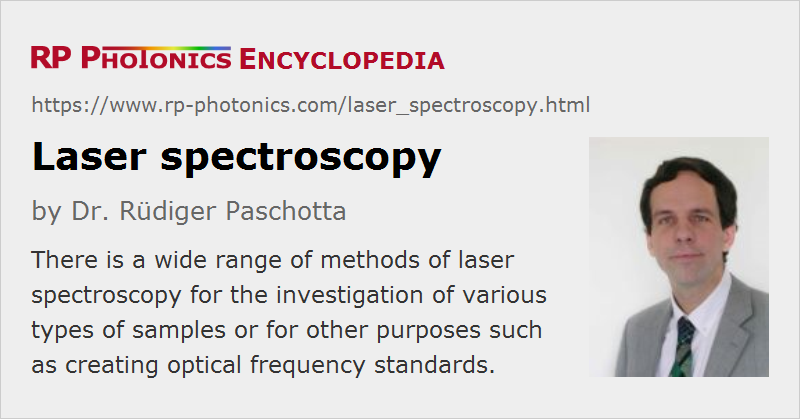

Laser Spectroscopy
Definition: methods where the interaction of laser light with matter is utilized
More general terms: optical spectroscopy
German: Laserspektroskopie
Categories: optical metrology, methods
How to cite the article; suggest additional literature
Author: Dr. Rüdiger Paschotta
Spectroscopy denotes methods where the interaction of light with matter is utilized. In many cases, lasers are used as light sources for spectroscopy, which is then called laser spectroscopy (or sometimes laser spectrometry).
In a wider sense, laser spectroscopy can be understood to use laser-like sources, including not only real lasers, but also optical parametric oscillators (OPOs) or the outputs of other nonlinear frequency conversion devices such as frequency doublers or difference frequency mixers.
For more general aspects, see the article on spectroscopy.
Relevant Properties of Lasers
Lasers have enormous potentials for applications in spectroscopy – in several respects:
- They can exhibit a very large degree of temporal coherence. This is related to a narrow linewidth – in extreme cases of precision spectroscopy, sub-hertz linewidths are used. Note that a narrow line with does not only help in terms of measurement resolution, but also for improving sensitivity. For example, the absorption related to a specific absorption line is more easily seen if it applies to all the probe light and not only to a part of its spectral content.
- The spatial coherence of laser light is usually very high, and this leads to further improvements. For example, one can use multipass gas cells, where a large number of round trips can be realized only with a collimated beam having a low beam divergence.
- Laser wavelengths can often be tuned (→ tunable lasers).; this can be used for highly precise scanning of optical transitions. Some lasers can be tuned quite rapidly (→ wavelength-swept lasers) for quick acquisition of spectra.
- Some lasers can provide rather high optical powers; particularly pulsed lasers can generated very high peak powers. This is relevant, for example, for laser-induced breakdown spectroscopy.
- Ultrafast lasers can generate ultrashort pulses, which also have various interesting properties for spectroscopy. For example, they allow for time-resolved spectroscopic measurements with an extremely high temporal resolution. Also, extremely precise frequency measurements can be done based on frequency combs.
In the following, we consider a range of different techniques of laser spectroscopy, which utilize different properties of laser light. Note, however, that laser spectroscopy is a huge field of research and applications, making it difficult to provide a complete overview.
Methods of Laser Spectroscopy
Laser Absorption Spectroscopy
A frequently used method is laser absorption spectroscopy, where a tunable narrow-linewidth laser (frequently a single-frequency laser) is tuned through some wavelength range, and the light absorption in some sample (i.e., a reduction of optical power of the probe beam) is measured as a function of that wavelength.
Obviously, the spectral resolution is limited by the laser linewidth, which is therefore often minimized with suitable laser designs. Extremely high precision is required and achieved in the area of optical frequency metrology, e.g. for realizing extremely precise optical clocks.
Absorption features are not always directly investigated by measuring wavelength-dependent absorption. Instead, one may exploit more subtle effects on modulated laser beams (frequency modulation spectroscopy) [6] or detect sound waves induced by laser pulses (photoacoustic spectroscopy, see below).
There are many variants of laser absorption spectroscopy, often developed with the goal to further improve the sensitivity. For more details, see the article on laser absorption spectroscopy.
Frequency Comb Spectroscopy
Some techniques of modern laser spectroscopy employ frequency combs as generated with mode-locked lasers [12]. As such a frequency comb contains some number of exactly equidistant lines in the spectrum, all of its frequency components are known (apart from some noise) if only two parameters are fixed (possibly stabilized with some feedback techniques): the comb spacing, which is related to the pulse repetition rate, and the carrier–envelope offset frequency. Therefore, frequency combs can serve for extremely precise frequency measurements in wide wavelength ranges, if they are produced with a high optical bandwidth (sometimes more than octave-spanning) and with proper frequency stabilization.
There are various important applications of frequency comb spectroscopy [19] in frequency metrology (in particular, ultraprecise optical clocks) and in other fields.
Raman Spectroscopy
In Raman spectroscopy, one exploits the phenomenon that a medium irradiated with narrow-band continuous-wave laser light does not only scatter light at the same optical frequency (Rayleigh scattering), but partly with slightly reduced frequencies (Raman scattering). The corresponding loss of photon energy stays in the medium; it leads to the excitation of vibrational or rotational modes. By analyzing the optical spectrum of the weak Raman-shifted light (after suppressing Rayleigh-scattered light with a notch filter), one can retrieve information on the vibrational or rotational modes of the medium, also on its temperature.
Raman spectroscopy has a wide range of applications for example in biology and medicine, for distributed temperature sensing in optical fibers, the analysis of artwork and the detection of explosives.
Photoacoustic Spectroscopy
The wavelength-dependent absorption of light in a sample is usually measured through the reduction of optical power of a light beam going through the sample. Photoacoustic spectroscopy, however, is based on a different method: one detects sound waves which are excited by the absorption of intense laser pulses. Such pulses can heat a sample gas or solid material, for example, causing a week pressure wave which can be detected with a microphone. Processing the microphone signal with a lock-in amplifier, one can achieve a high sensitivity.
Ultrafast Laser Spectroscopy
Although probably most techniques of laser spectroscopy are based on continuous-wave lasers, there are also various methods where mode-locked lasers are used, which produce trains of ultrashort pulses. Some examples:
- There are pump–probe measurements which allow one to measure the temporal evolution of systems on ultrashort time scales. In simple cases, no spectral information is obtained. However, it is also possible to get time-resolved spectroscopic information when using broadband probe pulses. This is called transient-absorption spectroscopy.
- There are methods of time-resolved photoelectron spectroscopy, where a first laser pulse excites the sample under investigation, and a second laser pulse ionizes the material. One then measures the distribution of kinetic energies of photoelectrons from this process for different time delays between the pump and probe pulses.
Laser-induced Breakdown Spectroscopy
Intense laser pulses can vaporize and ionize materials, involving the effect of laser-induced breakdown. The light flash emerging from the vaporized material can be analyzed with a spectrograph, and spectroscopic fingerprints can then be used to identify certain atoms.
For this kind of spectroscopic method, the wavelength of the laser pulses is not particularly important, as the laser light is used only for concentrated delivery of energy. Wavelength resolution is obtained only on the side of photodetection.
Lasers for Spectroscopy
Due to the enormously wide range of methods for laser spectroscopy, there is also a wide range of different laser sources which are used for such purposes:
- Small single-frequency laser diodes can be used as cheap and compact wavelength-tunable sources. The emission wavelength is often tuned simply by varying the drive current, which affects the temperature. More refined schemes involve an external laser resonator containing wavelength-selective optical elements. Such external cavity diode lasers offer higher performance.
- Some broadband tunable solid-state lasers, such as titanium–sapphire lasers, chromium zinc selenide and sulfide lasers (Cr2+:ZnSe, Cr2+:ZnS, see chromium-doped gain media), Cr4+:MgSiO4 (forsterite) lasers and erbium-doped fiber lasers can cover wavelength ranges of tens to hundreds of nanometers and often also provide a substantial output power and low laser noise. In some cases, Q-switched operation with the generation of nanosecond pulses is useful; important examples are laser-induced breakdown spectroscopy and LIDAR. High pulse energies combined with a narrow linewidth (normally in single-frequency operation) are often of interest.
- Fixed-wavelength solid-state lasers with relatively high power are used in Raman spectroscopy. A narrow linewidth is important.
- Mid-infrared radiation and terahertz radiation can be generated with quantum cascade lasers, often offering better performance and higher convenience than the previously often used lead salt lasers. Very wide wavelength regions are accessible with such sources.
- Mode-locked lasers, usually in the form of solid-state lasers, emitting trains of ultrashort pulses, are used for generating frequency combs (see above), often with highly stabilized optical frequencies.
- Dye lasers can access broad wavelength regions, particularly in the visible spectral range, but also in the near ultraviolet and near infrared. There are continuous-wave, pulsed and mode-locked versions.
- Optical parametric oscillators, pumped with various types of lasers in continuous-wave operation, with nanosecond, picosecond or femtosecond pulses, can often be tuned in very wide wavelength regions, and can access spectral regions which are not directly accessible with lasers. The extension to shorter wavelengths is possible with methods like frequency doubling and sum frequency generation, whereas difference frequency generation is a method for generating long-wavelength (often mid-infrared or even terahertz) radiation.
- Supercontinuum generation can be used as a method to generate broadband light as required for some spectroscopic measurements. This method provides enormously broad spectra, often in combination with high spatial coherence and a significant optical power.
This list of laser sources is not complete; even exotic types of lasers and nonlinear sources are sometimes used to meet certain requirements for spectroscopic applications.
A low level of laser noise is often important for precision spectroscopy. Various types of noise, such as intensity noise, phase noise (related to a finite optical bandwidth) or timing jitter, may be relevant. More or less sophisticated schemes for low-noise operation and for the stabilization of lasers are therefore often employed. These themselves often involve techniques of spectroscopy, as far as frequency stabilization is concerned. In extreme cases, a linewidth below 1 Hz is achieved.
Applications of Laser Spectroscopy
Methods of laser spectroscopy are often used for detecting the composition of materials, often including quantitative measurements of concentrations. Some examples:
- Concentrations of trace gases in the atmosphere are measured e.g. with laser radar (LIDAR) methods in the context of environmental monitoring. Similarly, pollutants can be detected in water, and concentrations of medically active substances can be measured. Spectroscopic devices based on the analysis of laser-induced fluorescence are partly used even in space, e.g. for monitoring vegetation and optimizing agriculture.
- Biology, medicine and chemistry can profit from precise and rapid methods of material analysis, which are partly non-destructive.
- Typical security applications include the detection of explosives and drugs.
- The detailed composition of pieces of artwork like paintings can be analyzed e.g. for revealing their age and checking their authenticity.
- There are numerous applications in industrial process monitoring and quality control, and in fundamental research, e.g. the diagnostics of combustion processes.
- In various contexts, spectroscopy can be used for temperature measurements based on the temperature dependence of level populations.
Suppliers
The RP Photonics Buyer's Guide contains 39 suppliers for laser spectroscopy equipment. Among them:
Questions and Comments from Users
Here you can submit questions and comments. As far as they get accepted by the author, they will appear above this paragraph together with the author’s answer. The author will decide on acceptance based on certain criteria. Essentially, the issue must be of sufficiently broad interest.
Please do not enter personal data here; we would otherwise delete it soon. (See also our privacy declaration.) If you wish to receive personal feedback or consultancy from the author, please contact him e.g. via e-mail.
By submitting the information, you give your consent to the potential publication of your inputs on our website according to our rules. (If you later retract your consent, we will delete those inputs.) As your inputs are first reviewed by the author, they may be published with some delay.
Bibliography
| [1] | W. R. Bennett, Jr., “Hole burning effects in a He–Ne optical maser”, Phys. Rev. 126 (2), 580 (1962), doi:10.1103/PhysRev.126.580 |
| [2] | P. W. Smith and R. Hänsch, “Cross-relaxation effects in the saturation of the 6328-Å neon-laser line”, Phys. Rev. Lett. 26 (13), 740 (1971), doi:10.1103/PhysRevLett.26.740 |
| [3] | T. W. Hänsch, M. D. Levenson and A. L. Schawlow, “Complete hyperfine structure of a molecular iodine line”, Phys. Rev. Lett. 26 (16), 946 (1971), doi:10.1103/PhysRevLett.26.946 |
| [4] | C. K. N. Patel, E. G. Burkhardt, and C. A. Lambert, “Spectroscopic measurements of stratospheric nitric oxide and water vapor” (an early demonstration of Lidar), Science 184, 1173 (1974) |
| [5] | J. N. Eckstein, A. I. Ferguson, and T. W. Hänsch, “High-resolution two-photon spectroscopy with picosecond light pulses”, Phys. Rev. Lett. 40 (13), 847 (1978), doi:10.1103/PhysRevLett.40.847 |
| [6] | G. C. Bjorklund et al., “Frequency-modulation spectroscopy”, Appl. Phys. B 32 (3), 145 (1983), doi:10.1007/BF00688820 |
| [7] | T. W. Hänsch and B. Couillaud, “Laser frequency stabilization by polarization spectroscopy of a reflecting reference cavity”, Opt. Commun. 35 (3), 441 (1980), doi:10.1016/0030-4018(80)90069-3 |
| [8] | E. S. Polzik et al., “Spectroscopy with squeezed light”, Phys. Rev. Lett. 68 (20), 3020 (1992), doi:10.1103/PhysRevLett.68.3020 |
| [9] | K. J. Boller and T. Schroeder, “Demonstration of broadband intracavity spectroscopy in a pulsed optical parametric oscillator of beta-barium borate”, J. Opt. Soc. Am. B 10 (9), 1778 (1993), doi:10.1364/JOSAB.10.001778 |
| [10] | A. Kachanov et al., “Intracavity laser spectroscopy with vibronic solid-state lasers: I. Spectro-temporal transient behaviour of a Ti:sapphire laser”, J. Opt. Soc. Am. B 11 (12), 2412 (1994), doi:10.1364/JOSAB.11.002412 |
| [11] | A. Garnache et al., “High-sensitivity intracavity laser absorption spectroscopy with vertical-external-cavity surface-emitting semiconductor lasers”, Opt. Lett. 24 (12), 826 (1999), doi:10.1364/OL.24.000826 |
| [12] | R. Holzwarth et al., “Optical frequency synthesizer for precision spectroscopy”, Phys. Rev. Lett. 85 (11), 2264 (2000), doi:10.1103/PhysRevLett.85.2264 |
| [13] | C. Haisch and R. Niessner, “Light and sound – photoacoustic spectroscopy”, Spectroscopy Europe 14/5, 10 (2002), http://www.spectroscopyeurope.com/images/stories/ArticlePDfs/PAS14_5.pdf |
| [14] | J. Mandon et al., “Fourier transform spectroscopy with a frequency comb”, Nature Photon. 3, 99 (2009), doi:10.1038/nphoton.2008.293 |
| [15] | D. W. Ball, “Photoacoustic spectroscopy”, Spectroscopy 21 (9) (2009) |
| [16] | F. Adler et al., “Mid-infrared Fourier transform spectroscopy with a broadband frequency comb”, Opt. Express 18 (21), 21861 (2010), doi:10.1364/OE.18.021861 |
| [17] | D. D. Arslanov et al., “Continuous-wave optical parametric oscillator based infrared spectroscopy for sensitive molecular gas sensing”, Laser & Photon. Rev. 7 (2), 188 (2013), doi:10.1002/lpor.201100036 |
| [18] | D. W. Hahn and N. Omenetto, “Laser-induced breakdown spectroscopy (LIBS), part II: review of instrumental and methodological approaches to material analysis and applications to different fields”, Appl. Spectroscopy 66 (4), 347 (2012) |
| [19] | N. Picqué and T. W. Hänsch, “Frequency comb spectroscopy”, Nature Photon. 13, 146 (2019), doi:10.1038/s41566-018-0347-5 |
| [20] | W. Demtröder, Laser Spectroscopy: Basic Concepts and Instrumentation, 3rd ed. (Springer, 2003) |
| [21] | D. A. Cremers and L. J. Radziemski, Handbook of Laser-Induced Breakdown Spectroscopy, John Wiley & Sons, New York (2006) |
| [22] | T. Rieger and T. Volz, “Doppler-free saturation spectroscopy”, http://www.mpq.mpg.de/4992695/saturation_spectroscopy.pdf |
See also: spectroscopy, time-resolved spectroscopy, optical spectrum, intracavity laser absorption spectroscopy, multipass gas cells, spectrometers, tunable lasers, mid-infrared laser sources, frequency combs, frequency metrology
and other articles in the categories optical metrology, methods
|  |
If you like this page, please share the link with your friends and colleagues, e.g. via social media:
These sharing buttons are implemented in a privacy-friendly way!